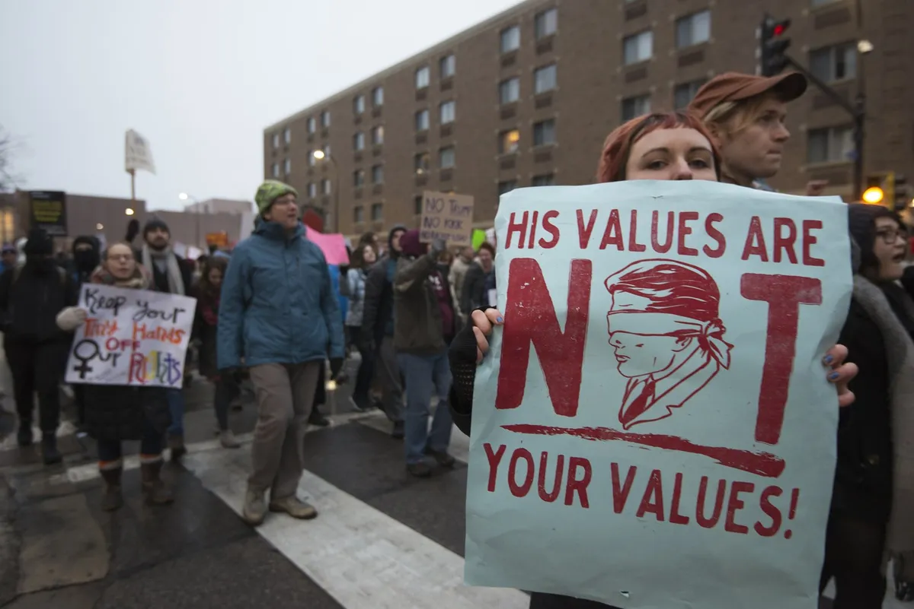

OKpolítico
OKpolíticoElecciones intermedias de EE. UU. 2026: qué se juega
▶ Ver este video en YouTube y suscríbete

Explicación detallada sobre las elecciones intermedias de Estados Unidos del 3 de noviembre de 2026. Revisamos la renovación de los 435 escaños de la Cámara de Representantes, las 35 bancas del Senado correspondientes a la Clase II y dos comicios especiales, así como la disputa en 36 gubernaturas es
Compartir por WhatsAppEl balance del poder en Washington a prueba
El martes 3 de noviembre de 2026, Estados Unidos acude a las urnas en una jornada legislativa y estatal determinante. No se vota por la presidencia, pero el resultado definirá si la administración de Donald Trump mantiene el control del Capitolio o si el Partido Demócrata asume la mayoría legislativa.
En estos comicios de medio término están en juego los 435 escaños de la Cámara de Representantes y 35 bancas de las 100 que integran el Senado. Además, 36 estados eligen gobernador, configurando el mapa de gobernabilidad para los dos años restantes del periodo presidencial.
✉️ Recibe lo importante del día en tu correo. Suscríbete gratis →De acuerdo con el promedio de sondeos de CNN y RealClearPolitics, la oposición demócrata encabeza la intención de voto nacional para la Cámara de Representantes con 51.1 por 100 frente a 42.8 por 100 del Partido Republicano.
Los mercados y las proyecciones electorales observan este margen como una posibilidad directa de alternancia legislativa. Para México, las implicaciones no son menores ni lejanas.
El control del Congreso estadounidense incide en la confirmación de embajadores, la asignación presupuestal fronteriza y el destino de la revisión periódica del Tratado entre México, Estados Unidos y Canadá.
Origen y mecánica de las elecciones intermedias
Las llamadas midterms se realizan exactamente a la mitad del mandato presidencial de cuatro años. Su función institucional consiste en someter a evaluación el desempeño del gobierno federal y renovar de forma escalonada el Poder Legislativo.
La fijación del primer martes después del primer lunes de noviembre tiene antecedentes históricos precisos. Data de la Ley Electoral de 1845, establecida por el Congreso para permitir que las poblaciones rurales acudieran a votar tras las cosechas de otoño y los servicios religiosos dominicales.
En el sistema estadounidense coexisten dos fases principales: las primarias, que en este ciclo se desarrollaron entre marzo y septiembre según el calendario de cada estado, y la elección general de noviembre. Las reglas operativas no son uniformes a nivel federal, ya que cada estado establece sus propios plazos de registro y modalidades de sufragio.
Hasta finales de octubre de 2026, la participación anticipada superó los 50 millones de votos emitidos mediante boleta por correo o en centros presenciales. Esta cifra representa el 87 por 100 del volumen observado en periodos comparables previos, de acuerdo con registros de monitoreo electoral.
Cámara de Representantes: la disputa por los 218 escaños
La Cámara de Representantes renueva la totalidad de sus 435 distritos cada dos años. Los representantes ejercen periodos breves, por lo que toda la cámara baja vuelve a competir de forma íntegra ante los electores.
La mayoría simple requiere 218 curules. Antes de estos comicios, el Partido Republicano mantiene una mayoría de 219 escaños, según el registro reportado por EFE, frente a 214 del Partido Demócrata,
además de un legislador independiente alineado a la bancada oficialista y dos vacantes. Para arrebatar el control del recinto legislativo, los demócratas requieren una ganancia neta de cuatro escaños.
Quien obtenga los 218 asientos designará a la presidencia de la Cámara, definirá qué proyectos de ley llegan al pleno y encabezará los comités que aprueban el presupuesto y supervisan al gabinete. A este escenario se suma el rediseño de distritos a mitad de década impulsado en estados de mayoría republicana.
Un análisis apoyado en datos del Cook Political Report identificó que diez distritos demócratas se volvieron más favorables para el partido en el poder, mientras cuatro se movieron en la dirección opuesta, lo que ajusta las posibilidades en circunscripciones clave.
El Senado y la batalla por la Clase II
El Senado se compone de 100 legisladores con periodos de seis años, organizados en tres clases escalonadas para evitar cambios bruscos en la cámara alta. En 2026 corresponde votar a los 33 escaños de la llamada Clase II, sumados a dos elecciones especiales para cubrir vacantes extraordinarias.
Las elecciones extraordinarias corresponden a Florida, asiento anteriormente ocupado por Marco Rubio, y a Ohio, plaza que pertenecía a JD Vance antes de asumir la vicepresidencia. Ambas contiendas atraen recursos millonarios por su valor simbólico y estratégico.
Actualmente, la cámara alta está integrada por 53 senadores republicanos, 45 demócratas y dos independientes que votan con la bancada demócrata, sumando un bloque opositor de 47 bancas. Si los demócratas alcanzan 50 asientos, el desempate recae constitucionalmente en el vicepresidente JD Vance, por lo que requieren sumar cuatro bancas para obtener el control absoluto con 51 votos.
El modelo predictivo de Decision Desk otorga a los demócratas 79 por 100 de posibilidades de capturar la Cámara de Representantes y 57 por 100 de ganar el Senado. Sondeos estatales de CNN marcan contiendas cerradas en siete estados: Texas, Michigan, Alaska, Iowa, Kansas, Maine y Ohio.
En Texas, las encuestas difundidas por CNN ubican al demócrata James Talarico con una ventaja de 1.8 puntos sobre el republicano Ken Paxton. En Michigan, el candidato Abdul El-Sayed aventaja por 2.5 puntos a Mike Rogers,
mientras que en Nebraska una medición del periódico The New York Times y el Siena College coloca al senador republicano Pete Ricketts con 49 por 100 frente al 43 por 100 del independiente Dan Osborn.
36 gubernaturas: el tablero de los estados
En el plano local, 36 estados eligen titular del poder ejecutivo. De los 50 estados del país vecino, 26 están gobernados por el Partido Republicano y 24 por el Partido Demócrata, manteniendo una división equilibrada entre los dos bloques.
De los 36 cargos que se eligen este año, la mitad previa correspondía a demócratas y la otra mitad a republicanos. En 15 estados, los mandatarios en funciones alcanzaron su límite constitucional de mandato, lo que obliga a relevos forzosos en entidades como California, Georgia, Florida y Colorado.
Los reportes de EFE y CNN indican que las encuestas colocan a los demócratas como favoritos en 20 de estas 36 contiendas. Entre las candidaturas destacadas figuran Xavier Becerra en California y Kathy Hochul en Nueva York.
Los gobernadores administran presupuestos estatales, ejercen facultades de veto local y determinan aspectos logísticos sobre los comicios venideros. Asimismo, las legislaturas locales de estados como Arizona, Pensilvania, Michigan y Wisconsin enfrentan posibles cambios de mayoría que redefinirán el equilibrio político interno.
Postura oficial frente a la realidad electoral
El presidente Donald Trump ha sostenido en mítines virtuales que retener el control de ambas cámaras resulta indispensable para consolidar su plataforma económica, mantener los aranceles y cumplir su promesa de reducir el costo de vida.
En Kentucky ofreció inversiones farmacéuticas por 100 millones de dólares si su partido preserva el Poder Legislativo. Sin embargo, mediciones de opinión pública reflejan desgaste en el respaldo ciudadano hacia la gestión federal.
Una encuesta levantada por Reuters e Ipsos sitúa la aprobación del presidente Trump en 32 por 100, en medio de tensiones por la política de deportaciones, la inflación interna y el involucramiento en el conflicto con Irán.
A este indicador se sumaron cambios de agenda en la recta final de la contienda. El mandatario canceló actos proselitistas presenciales en Iowa y Kansas para sustituirlos por transmisiones a distancia, mientras la dirigencia demócrata intensificó recorridos acusando que el costo de vida persiste elevado.
Impacto directo para México: T-MEC, frontera y visas
Las decisiones tomadas por los votantes en Washington y las gobernaciones fronterizas tocan de inmediato los intereses de México. El Senado estadounidense posee la facultad exclusiva de ratificar nombramientos clave de la Casa Blanca, incluidos los titulares del Departamento de Estado, Defensa y la Embajada en México.
En el ámbito comercial, tras la resolución adoptada el 1 de julio de 2026, el Tratado entre México, Estados Unidos y Canadá quedó supeditado a esquemas de revisión anual. La postura que adopte el Senado federal determinará si el acuerdo trilateral continúa operando sin trabas arancelarias o si enfrenta condicionamientos legislativos.
Los comicios también inciden en la política migratoria que impacta a más de diez millones de connacionales radicados en territorio estadounidense. La designación de grupos bajo catálogo del Departamento de Estado incluye a ocho ciudadanos mexicanos,
al tiempo que las cancelaciones de visas y sanciones del Departamento del Tesoro dependen directamente de las prioridades del Ejecutivo federal. Si los republicanos retienen ambas cámaras, Trump dispondrá de respaldo parlamentario para endurecer supervisiones fronterizas y presupuestos de contención. En contraste,
una mayoría demócrata en la Cámara baja o en el Senado reactivaría comités de vigilancia y frenaría partidas extraordinarias, obligando a negociaciones bipartidistas que influirán en la relación bilateral con el gobierno de la presidenta Claudia Sheinbaum.
Qué sigue tras el 3 de noviembre
El escrutinio de votos en Estados Unidos no concluye la misma noche de la jornada comicial. Debido a la recepción de boletas por correo y los cómputos distritales cerrados, la definición formal de los 435 escaños y las 35 bancas senatoriales puede prolongarse varios días en estados competitivos.
El nuevo Congreso estadounidense asumirá formalmente sus funciones en enero de 2027. A partir de esa fecha quedará establecido el margen de maniobra legislativa para la segunda mitad de la administración federal y comenzará la antesala hacia las elecciones presidenciales de 2028.
El equilibrio de poderes entre republicanos y demócratas fijará los límites presupuestales, comerciales y migratorios de América del Norte durante los próximos dos años. Los datos oficiales del escrutinio confirmarán qué bloque asume el liderazgo del Capitolio.
Sigue viendo
Con información de
Imagen Radio · Milenio · Europa Press · El Cronista · EFE · Forbes México · CNN Español · The New York Times · Politico · Observatorio de la Democracia